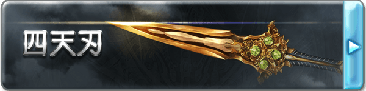

■四天刃（D+500）
鎮壓整個蒼天之下的威脅、被群星之主所鐘愛家族的守護者-卡托魯所使用的短劍，華麗的劍身上鑲嵌著代表‘四’的四顆寶珠，是只屬于有著無論墮入何等境地都有要守護的東西之人的暗殺之刃，對持有者的精神會有著兇暴化的副作用。
作為武器具有4L傷害，并具有特性【閃耀之雙剣】。
【閃耀之雙剣】
當四天刃被持有的時候，會對持有者造成不可減免的2點亢奮，并會在持有者的另一只手上創造一個與自身相同的復制品，當四天刃或者復制品脫離持有時，復制品就會立刻消散。此外，使用四天刃在對目標造成傷害后，若目標身上存在異常狀態，則選擇其身上的一種異常，該異常的點數提升1點。
■[異統]四天刃·真（C+1000）
這個階段的四天刃才會展現出自己真正的光輝，其刃身會向外衍生出虛幻的深紫色拓展刀刃。
作為武器的性能提升，獲得了【能量武器】與【9加骰】，此外【閃耀之雙剣】效果獲得提升。
【閃耀之雙剣】
當四天刃被持有的時候，會對持有者造成不可減免的4點亢奮，并會在持有者的另一只手上創造一個與自身相同的復制品，當四天刃或者復制品脫離持有時，復制品就會立刻消散。此外，使用四天刃在對目標造成傷害后，若目標身上存在異常狀態，則選擇其身上的一種異常，該異常的點數提升2點。
■[異統]四天刃·○（B+2000）
這個階段的四天刃已經不僅僅是卡托魯的遺產，將會漸漸染上屬于你的色彩，在其他人的手里四天刃將失去一切效果和能力，變為一把普通的短劍。從以下幾個詞綴中選擇一個作為四天刃的后綴，這將會使四天刃所造成的任意傷害轉變為對應的類型。與此同時，四天刃的衍生刀刃將會轉變為對應的顏色。
焔:灼熱，赤
雪:凍寒，蒼
界:物理，黃
凪:音波，青
煌:神圣，白
煉:褻瀆，黑
作為武器的性能再度提升，傷害提升為6L，獲得了【破甲10】與【8加骰】的特性，特性【閃耀之雙剣】獲得提升，并且獲得特性【Gammadion Cross】。
【閃耀之雙剣】
當四天刃被持有的時候，會對持有者造成不可減免的6點亢奮，并會在持有者的另一只手上創造一個與自身相同的復制品，當四天刃或者復制品脫離持有時，復制品就會立刻消散。此外，使用四天刃在對目標造成傷害后，若目標身上存在異常狀態，則選擇其身上的一種異常，該異常的點數提升3點。
【Gammadion Cross】
使用四天刃在對目標造成傷害后，若目標身上存在異常狀態，則選擇其身上的一種異常，對其造成等同傷害數值的該類異常。
■[異統]四天刃·○○（A+4000）
這個階段的四天刃進化到了究極的境地，原本虛幻的衍生刀刃邊緣被金色的邊緣所包裹，刃身上的寶珠變為閃耀的寶石。
對應在B級選擇的屬性，四天刃的后綴將會再次轉變，并帶來新的效果。
焔→紅天:武器攻擊造成的傷害將會帶來等同傷害的【燃燒】
雪→蒼天:武器攻擊造成的傷害將會帶來等同傷害的【凍結】
界→轟天:武器獲得【眩暈】特性，并且威猛提升10點
凪→疾天:武器獲得【超級貫穿】特性，并且高速提升10點
煌→白天:武器獲得【光明】特性，持有者在死亡后，靈魂會被保護在武器中，若被帶回主神空間則可以支付C+1000重塑身體而復活。
煉→黒天:武器獲得【黑暗】特性，被該武器擊殺的單位將無法以任何方式復活，這是一個A級的詛咒來源效果。
此外四天刃作為短劍的性能達到了極致，傷害提升至16L，破甲提升至15，并獲得【破魔15】、【幽冥】以及【神兵】特性。這一階段的四天刃無法被任何方式破壞，特性【閃耀之雙剣】及【Gammadion Cross】獲得提升，并獲得了【Carnage】特性。
【閃耀之雙剣】
當四天刃被持有的時候，會對持有者造成不可減免的8點亢奮，并會在持有者的另一只手上創造一個與自身相同的復制品，當四天刃或者復制品脫離持有時，復制品就會立刻消散。此外，使用四天刃在對目標造成傷害后，若目標身上存在異常狀態，則選擇其身上的一種異常，該異常的點數提升4點。
【Gammadion Cross】
使用四天刃在對目標造成傷害后，若目標身上存在異常狀態，則選擇其身上的至多兩種異常，對其造成等同傷害數值的該類異常。
【Carnage】
四天刃的持有者在同一個回合中會額外獲得一個用于攻擊動作的標準動作，并且受到四天刃傷害的單位會獲得等同傷害數值的流血。
▓▓四天刺殺-四天洛往斬
若無特殊說明，該技能樹下的技藝只能由四天刃為媒介來發動。
■死之舞踏（C+1000）
◆發動動作:標準
◆使用間隔:無
◆効果時間:立即
「さぁ、楽しませてください」
對目標進行一次攻擊，根據造成的傷害從以下的異常中隨機選擇一個發動：
攻擊down (攻擊上承受等同傷害的減值，減值取高不疊加，持續一場景)
防御down (防御上承受等同傷害的減值，減值取高不疊加，持續一場景)
暗闇 (效果量等同傷害，效果等同炫目)
侵蝕 (效果量等同傷害，效果等同流血，但是使用智力+學識-魔法解除)
減速 (效果量等同傷害，每輪減少對應點數的任意能量，從最多的開始減少，使用智力+學識-魔法進行減輕)
喪失 (效果量等同傷害，效果等同疲乏)
麻痺 (效果量等同傷害)
以上效果均視為異常狀態。
■死之舞踏·極（B+2000）
◆發動動作:標準
◆使用間隔:無
◆効果時間:立即
「調子に乗ってんじゃねえぞ、ゴミ蟲が！」
在【死之舞踏】的基礎上支付差價升級，效果為對目標進行一次攻擊，本次攻擊獲得等同目標身上異常種類的褻瀆加值，根據造成的傷害從以下的異常中隨機選擇兩個發動：
攻擊down (攻擊上承受等同傷害的減值，減值取高不疊加，持續一場景)
防御down (防御上承受等同傷害的減值，減值取高不疊加，持續一場景)
暗闇 (效果量等同傷害，效果等同炫目)
侵蝕 (效果量等同傷害，效果等同流血，但是使用智力+學識-魔法解除)
減速 (效果量等同傷害，每輪減少對應點數的任意能量，從最多的開始減少，使用智力+學識-魔法進行減輕)
喪失 (效果量等同傷害，效果等同疲乏)
麻痺 (效果量等同傷害)
以上效果均視為異常狀態。
■Avirati（B+2000）
◆發動動作:標準
◆使用間隔:6輪
◆効果時間:立即
「守るために、力を！」
以自身為中心10米范圍內的友方單位選擇身上的總計等級不超過S的強化效果持續時間提升1輪，該能力對持續時間為1次的效果無效。你可以重復購買這個能力，每次可以使發動時提升的能力上限增加一個S。
■Moment Vita（A+4000）
◆發動動作:標準
◆使用間隔:1輪
◆効果時間:立即
「汝、生を忘れることなかれ。メメント?ヴィータ」
對目標發動兩次攻擊，只要造成1點傷害即可發動，目標自身的特性以及身上的總計為S的效果/狀態的計時向前或向后撥動一輪（由持有者決定），如果該狀態/效果會以輪為單位觸發，則立刻觸發一次。
■四天之嘆（A+4000）
◆發動動作:整輪
◆使用間隔:一日內再使用不可
◆効果時間:一場景
「四天より至る雫は激情の涙。その様は、終末の予兆！」
自身立刻獲得四個[神速]印記，每當自己進行長度不超過一個標準動作的行動時，可以消耗一個[神速]印記，則該行動無需消耗動作。